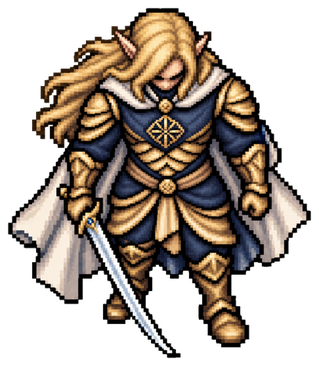
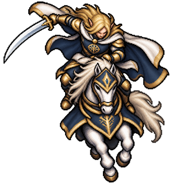

기존 글로르핀델 도보·기마를 기준으로 인간·엘프와 기수를 약 5등신으로 교정했습니다. 머리·몸통·다리 비율은 원화에서 수정하고, 게임 크기와 중심은 무기·깃발·장식을 제외한 신체 기준점으로 개별 고정했습니다.
61종 재작화, 길갈라드 지정 첨부본 적용, 난쟁이·고블린 10종 기존 체형 유지. 더 최근 지정한 에레스토르 첨부본도 보존했습니다.


에셋 갤러리 · 게임 · 개별 측정표